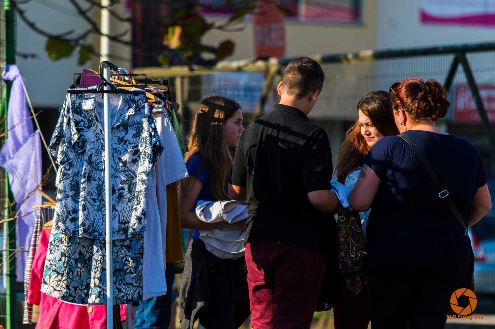
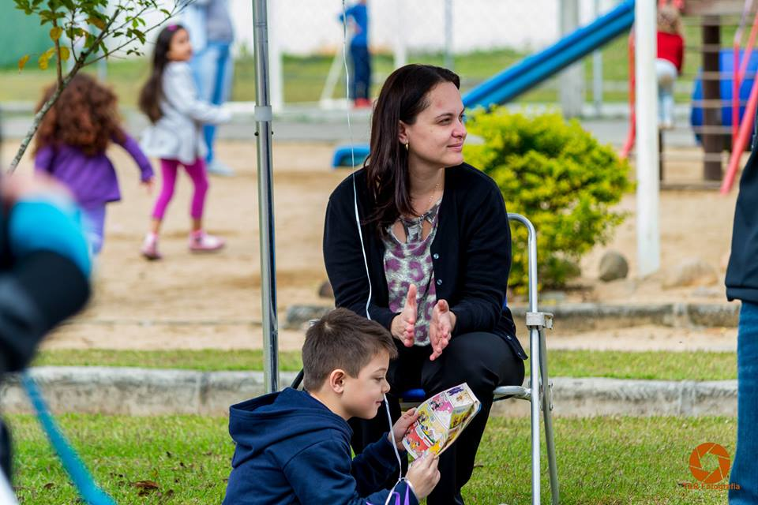

Mobilizada por vários grupos de mulheres de Blumenau, o movimento
PRAÇA LILÁS surge com o objetivo de ressignificar o uso dos
espaços públicos coletivos da cidade, resgatando seu caráter público, coletivo,
político, pedagógico e de lazer. Tendo como ponto de encontro as praças
da cidade, o movimento tem como proposito transformar, a partir da participação
das pessoas, os espaços públicos para que seja
lugares de encontros,
trocas e
fortalecimento das comunidades.
Compartilhe suas habilidades, troque ideias e participe! Clique aqui para inscrever a sua atividade para a próxima Praça Lilás.
Abaixo você confere as praças que já foram (e que serão!) acolhidas pelo nosso movimento.
Clique aqui para ver as fotos dos últimos eventos.